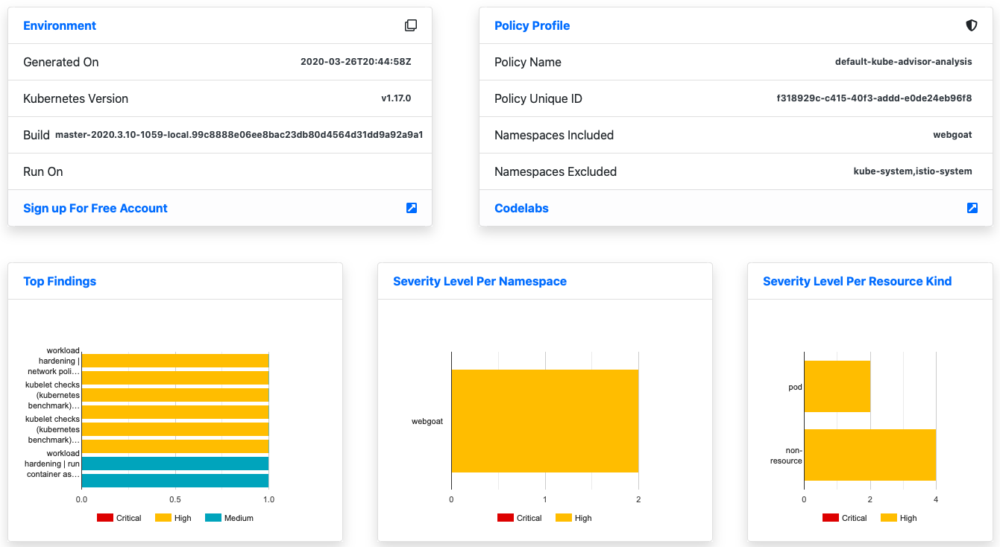

In this tutorial we will learn about Alcide Kubernetes Advisor, and how we can integrate it with GitHub Actions to implement continuous security and cluster hygiene for one or more Kubernetes clusters.

Alcide Advisor is an agentless Kubernetes audit, compliance and hygiene scanner that's built to ensure a friction free DevSecOps workflows. Alcide Advisor can be plugged in early in the development process and before moving to production.
With Alcide Advisor, the security checks you can cover includes:
- Kubernetes infrastructure vulnerability scanning.
- Hunting misplaced secrets, or excessive privileges for secret access.
- Workload hardening from Pod Security to network policies.
- Istio security configuration and best practices.
- Ingress Controllers for security best practices.
- Kubernetes API server access privileges.
- Kubernetes operators security best practices.
- Deployment conformance to labeling, annotating, resource limits and much more ...
- An user account on GitHub

Since GitHub Actions run automatically when you push to a repository, you'll have to create a new repository to add the action to. Please refer to the instructions here.
Of course, if you prefer to use an existing repository that is possible as well.
In this example below, we provide a GitHub Action that spins up a KinD kubernetes cluster and deploys an application (the notoriously insecure WebGoat) to it. Both kubectl and advisor connect to the cluster using the kubeconfig that automatically generated by the installer of the KinD cluster.
Your GitHub Actions workflow definition
Now that we have a GitHub repository, let's create a new GitHub Actions workflow by following the instructions here, using the workflow definition below to be written to the .github/workflows/main.yaml path.
name: CI
# Controls when the action will run. Triggers the workflow on push or pull request
# events but only for the master branch
on:
push:
branches: [ master ]
# A workflow run is made up of one or more jobs that can run sequentially or in parallel
jobs:
# This workflow contains a single job called "build"
build:
# The type of runner that the job will run on
runs-on: ubuntu-latest
# Steps represent a sequence of tasks that will be executed as part of the job
steps:
# Checks-out your repository under $GITHUB_WORKSPACE, so your job can access it
- uses: actions/checkout@v2
# Launches a KinD cluster to deploy our application under test to
- name: Launch Cluster
uses: engineerd/setup-kind@v0.3.0
# Basic check that the cluster is up and running
- name: Test cluster
run: |
kubectl cluster-info
kubectl get pods -n kube-system
# Deploy the application we want to scan to the cluster in a separate, new namespace
- name: Deploy application to cluster
run: |
kubectl create namespace webgoat
kubectl run --generator=run-pod/v1 webgoat --image=webgoat/webgoat-7.1 -n webgoat
# Kick off the scan with Alcide Advisor
- name: Scan Cluster
uses: alcideio/advisor-action@v1.1.0
with:
include_namespaces: 'webgoat'
output_file: 'advisor-scan.html'
# Upload the report to GitHub Action Artifacts
- name: Upload Alcide Advisor Scan Report
uses: actions/upload-artifact@v1
with:
name: advisor-scan.html
path: advisor-scan.html
By saving the workflow yaml, GitHub will automatically start running your workflow. Navigate to the output by clicking on the > Actions header item on your main repository page.
The GitHub Action will publish the scan results to Artifacts. In the top right corner of the workflow run, once the run is completed, there will be a Artifacts dropdown which you can download items from.

The report will look like this:

In this codelab we added an automated scan of an application on an kubernetes cluster as a step in your GitHub Actions workflow.